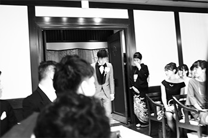
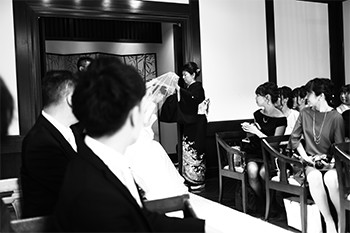
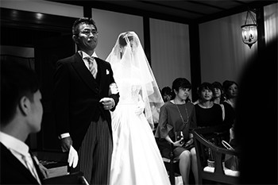

Taka & Aiko Wedding
Paper, Photo shooting
大切な友人夫婦の結婚式に席次表とドリンク表を贈り、
当日の写真撮影も行いました。
- Date
- Dec, 2017
- Shunsuke
- Photo shooting, Illust
- Yoshimi
- Design
自分たちらしい、オリジナルな式にしたい。
「しゅんすけ、頼みたいことあるんやけど」大学時代からの友人、タカから突然そんな連絡がきた。彼は同じく大学時代からの友人である、あいことすでに入籍をしていた。そんな2人が結婚式を挙げるという。
最初はウェルカムボードの依頼だったのだが、話を聞いていくうちに、オリジナルにこだわっていきたいようだった。そこで席次表をオリジナルにしてはどうかと提案してみた。
席次表に関しては、このつい2ヶ月前にも作っていたので、ノウハウがあるとまではいかないが、全くノーアイディアというわけでもない。
式まであと2ヶ月、急ピッチで準備が始まった。
主役2人の[色]をベースに、ぬくもりのあるデザインを
デザインの話になったので、さっそくよっしー召喚。
どうやら披露宴に関しては、タカよりもあいこのほうがメインで進めているらしい。デザインの雰囲気は、ぬくもりのある手描き感。水彩をベースに、手描きフォントで、ということのようだが、もうよくわからない。
気づいたら、あいことよっしーでメインとなるフォントまで決めていた。早い。
メインカラーはタカとあいこから連想される色で構成し、全体に少しスモーキーで落ち着いたカラーでまとめることになった。なにしろ、結婚式は冬の京都で行われるのだ。
季節と土地柄に合わせて、華やかだけど上品な仕上がりにしていきたい。
主役2人の[色]をベースに、ぬくもりのあるデザインを
デザインの話になったので、さっそくよっしー召喚。
どうやら披露宴に関しては、タカよりもあいこのほうがメインで進めているらしい。デザインの雰囲気は、ぬくもりのある手描き感。水彩をベースに、手描きフォントで、ということのようだが、もうよくわからない。
気づいたら、あいことよっしーでメインとなるフォントまで決めていた。早い。
メインカラーはタカとあいこから連想される色で構成し、全体に少しスモーキーで落ち着いたカラーでまとめることになった。なにしろ、結婚式は冬の京都で行われるのだ。
季節と土地柄に合わせて、華やかだけど上品な仕上がりにしていきたい。


All photo by Shunsuke
- 
- 
- 